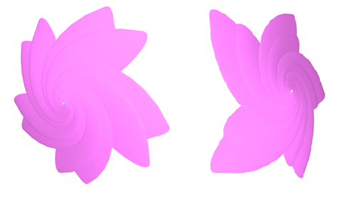

花の形を近似する数式として最も有名なのは、「バラ曲線（Rose Curve）」です。極座標系 \((r,θ)\) を用いて以下のシンプルな式で表されます。
\[
r=a\cos(nθ)\quad または\quad r=a\sin(nθ)
\]
・\(a\)：花びらの長さを決める。
・\(n\)：花びらの数を決める。
サクラの花びらを再現するには、バラ曲線をベースに, 先端の「切り込み」
を表現する工夫が必要。
最も有名な近似式の一つに、以下の極座標方程式がある。
\[
r=a(1+\sin(5θ)+0.5\cos(10θ))
\]
・\(\sin(5θ)\)：サクラの基本である 5枚の花びら を作る。
・\(0.5\cos(10θ)\)：花びらの先端をへこませ、サクラ特有の「切り込み」を表現する。
・\(a\)：全体の大きさを調整する。
[1] 面の色をピンクに設定する。
LateralOuter 255 128 255
[2] 花びらの輪郭の点を生成する。
p curve np.linspace(-np.pi,np.pi,300) (1+np.sin(5*T)+0.5*np.cos(10*T))*np.sin(T) (1+np.sin(5*T)+0.5*np.cos(10*T))*np.cos(T) [0]*len(T)
[3] 輪郭だけでは寂しいので, 縮小しつつ、回転しつつ、持ち上げてみる。
p g s 0.9 0.9 0.9 r 0 0 10 t 0 0 1/36 36
[4] 輪郭を変換した軌跡で面を張る。
surface
[5] 面の色を元に戻す。
LateralOuter 128 128 255